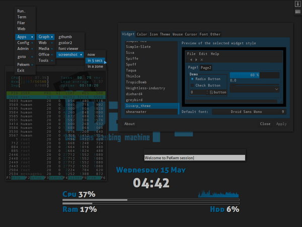

lang fr|gb

la session pekwm
PeKwm est un gestionnaire de fenêtre pour X développé par Claes Nästèn. PeKwm est extrèmement configurable, basé sur aewm++, proposant la navigation par onglets dans les fenêtres, les keychains, un menu éditable, des propriétés automatiques et une foule de fichiers de configs différents… :D je crois même que c'est le wm qui utilise le plus de fichiers de conf !
screenshots
{kind=link}
lancement
pekwm est lancé par le script ~/bin/start/pekwm_start.sh.
pour changer vos applications lancées au démarrage, éditer ce fichier:
composants
pekwm est un gestionnaire de fenêtre très complet... j'ai dependant ajouté un conky, le menu livarp géré par fbpanel et lxpanel pour la tasklist, disponible dans le coin supérieur droit (configurable depuis lxpanel: clic-droit:ajout/enlever des applets).
configuration
pour conky, il faut éditer son conkyrc:
lxpanel, dispose d'un éditeur de configuration graphique complet disponible au clic-droit sur le panel. pour plus de précisions, visitez la page dédiée.
pour fbpanel incluant le menu et le systray, visitez la page dédiée.
configuration de pekwm
la configuration de pekwm passe par l'édition des ses fichiers contenus dans ~/.pekwm/*
- ~/.pekwm/start: ce fichier joue le rôle du fichier autostart dans fluxbox: un script de lancement pour vos applications/préférences au démarrage de votre session. notez cependant que ce fichier sera relu à chaque rechargement de pekwm. il est donc conseillé de lancer vos applications depuis votre ~/bin/start/pekwm_start.sh.
vous pouvez néanmoins utiliser ce fichier pour lancer un script de fond d'écran aléatoire par exemple:
#!/bin/sh
# PekWM start file
# This file is a simple shell script; It gets run on pekwm startup, after
# the theme and all config has loaded if it is set executable
# (chmod +x start).
#
# This is different from ~/.xinitrc because a normal configuration of
# .xinitrc you'll run all commands, then launch the window manager last.
#
# It also gets re-run every time pekwm is restarted.
#
# As for it's usefulness, well, it's up to you. I actually set my background
# from my start file; since it runs after the theme gets loaded, this
# effectively overrides whatever's in the theme.
#
# There's probably a few other good uses for it, too. I mainly pushed for it
# because when I was doing fluxbox's docs, people used to complain that there
# wasn't one, and I wanted to avoid that for pekwm. ;) --eyez
# change aléatoirement le fond d'écran depuis un dossier #
# nécessite feh '# apt-get install feh' #
find [adresse_du_dossier] -type f -name '*.jpg' -o -name '*.png' | shuf -n 1 | xargs feh --no-xinerama --bg-scale &
- ~/.pekwm/config: ce fichier correspond au config.xml chez openbox, ou le wmfsrc sur wmfs, mais en plus simplifié, étant donné que certaines variables seront configurés dans des fichiers annexes. c'est dans ce fichier que vous allez indiquer le nombre de bureau, ainsi que leurs noms, les adresses de fichiers de configuration, les propriétés des fenêtres…
la syntaxe générale du fichier config et les options acceptées:
## emplacement des fichiers annexes à utiliser##
## adresses relatives ou absolues
Files {
Keys = "~/.pekwm/keys"
Mouse = "~/.pekwm/mouse"
Menu = "~/.pekwm/menu"
Start = "~/.pekwm/start"
AutoProps = "~/.pekwm/autoproperties"
Theme = "/usr/share/pekwm/themes/default"
Icons = "~/.pekwm/icons/"
}
## comportement des fenêtres lors du déplacement/redimensionnement ##
MoveResize {
EdgeAttract distance d'adhérance au bords en pixel
EdgeResist resistance des bords d'écran
WindowAttract distance d'adhérance entre fenêtres en pixel
WindowResist resistance des fenêtres
OpaqueMove dessiner les fenêtres lors du déplacement
OpaqueResize dessiner les fenêtres lors du redimensionnement
}
## propriétés des bureaux
Screen {
Workspaces nombre de bureaux
WorkspacesPerRow nombre de bureaux par colonne: "0" pour mettre en ligne.
WorkspaceNames nom des bureaux
ShowFrameList afficher la liste des fenêtres
ShowStatusWindow afficher les informations sur la fenêtre
ShowStatusWindowCenteredOnRoot afficher les infos sur la fenêtre au centre de lécran
ShowClientID affiche l'ID de la fenêtre
ShowWorkspaceIndicator temps d'affichage de la fenêtre d'info au changement de bureau
PlaceNew placer le client, si False, il apparait au coin supérieur gauche
FocusNew le nouveau client passe au premier plan
TrimTitle ce qui remplace le titre de la fenêtre quand la place manque
FullscreenAbove le client en plein écran est au premier plan
FullscreenDetect détecter les écrans lors d'un appel au fullscreen
HonourRandr lire les informations de Xrandr
HonourAspectRatio préserver le ratio d'affichage des fenêtres
EdgeSize distance des bords de l'écran (haut bas gauche droite)
EdgeIndent les bords d'écran doivent-ils être réservés
PixmapCacheSize nombre d'image inutilisée à garder dans le cache
DoubleClickTime temps entre deux clics pour devenir un double-clic en ms
## placement des fenêtres
## options du Model:
## Smart: tente de placer la fenêtre dans un espace inoccupé
## MouseCentered: place le centre de la fenêtre sous le pointeur
## MouseTopLeft: place le coin supérieur gauche de la fenêtre sous le pointeur
## MouseNotUnder: place la fenêtre au coin supérieur gauche de l'écran
## CenteredOnParent: place la fenêtre au centre de leur fenêtre parent
Placement {
Model = "CenteredOnParent Smart MouseNotUnder"
Smart {
Row utilise les lignes, si False, utilise les colonnes
TopToBottom placement du haut vers le bas
LeftToRight placement de la gauche vers la droite
OffsetX décallage horizontal du placement
OffsetY décallage vertical du placement
}
}
## definir si une fenêtre doit avoir un nom unique dans la liste des fenêtres
## si oui, le nom sera suivi d'un numéro
UniqueNames {
SetUnique utiliser l'option nom unique
Pre texte à placer devant le numéro de fenêtre
Post texte à placer après le numéro de la fenêtre
}
}
## configuration du menu
Menu {
DisplayIcons afficher les icones de menu
Icons = "DEFAULT" { ## taille des icones en pixel du menu "DEFAULT"
Minimum = "16x16"
Maximum = "16x16"
}
# pour avoir des icones de tailles différentes dans d'autres menus,
# par exemple le menu wallpaper, utiliser cette syntaxe pour chaque
# que vous voulez "libérer".
# Icons = "Wallpaper" {
# Minimum = "64x64"
# Maximum = "64x64"
# }
# Definition du comportement de la souris sur les items de menu:
# valeurs possibles: "ButtonPress ButtonRelease DoubleClick Motion"
# pour avoir les sous-menus qui s'ouvrent au passage du pointeur,
# commenter la ligne 'Enter', décommenter la ligne du dessous puis
# relancer pekwm.
Select = "Motion MotionPressed" ## selection au survol
Enter = "MotionPressed ButtonPress" ## entrer au clic
# Enter = "Motion" ## entrer au survol
Exec = "ButtonRelease" ## executer lors du relachement
}
## configuration du lanceur intégré
CmdDialog {
HistoryUnique eviter les répétitions dans l'historique
HistorySize taille de l'historique
HistoryFile fichier de stockage de l'historique
HistorySaveInterval intervalle de sauvegarde dans history
}
## configuration du harbour pouvant inclure des dockapps
Harbour {
OnTop placer au-dessus
MaximizeOver masquer derrière les fenêtres maximisées
Placement position
Orientation orientation
Head écran
## configuration des dockapps
DockApp {
SideMin taille minimale
SideMax taille maximale 0=illimitée
}
}
- ~/.pekwm/keys: la configuration des raccourcis clavier et des chaines de raccourcis. en effet, pekwm gère les key-chains, une sorte de sous-menu de raccourcis clavier qui vous permettent d'augmenter considérablement le nombre de raccourcis possibles.
si vous modifiez ce fichier, assurez-vous de ne pas obtenir de doublons, pour cela, je vous conseille de commenter/désactiver tous les raccourcis inutiles avant de modifier ce fichier.
voici la liste des actions acceptées par les keys (la liste des raccourcis clavier est donnée plus bas dans la section 'raccourcis'):
# se deplacer parmis les fenêtres NextFrame EndRaise ## aller à la fenêtre suivante PrevFrame EndRaise ## aller à la fenêtre précédente NextFrameMRU EndRaise ## aller à la fenêtre suivante et lui laisser le focus PrevFrameMRU EndRaise ## aller à la fenêtre précédente et lui laisser le focus ActivateClientRel 1 ## aller à la fenêtres suivante dans un groupe de fenêtres ActivateClientRel -1 ## aller à la fenêtres précédente dans un groupe de fenêtres MoveClientRel 1 ## deplacer la fenêtre vers la droite dans un groupe de fenêtres MoveClientRel -1 ## deplacer la fenêtre vers la gauche dans un groupe de fenêtres FocusDirectional Left ## déplace le focus vers la gauche FocusDirectional Right ## déplace le focus vers la droite FocusDirectional Up ## déplace le focus vers le haut FocusDirectional Down ## déplace le focus vers le bas # se déplacer dans les bureaux GotoWorkspace Left ## aller au bureau de gauche GotoWorkspace Right ## aller au bureau de droite GotoWorkspace Up ## aller au bureau du haut GotoWorkspace Down ## aller au bureau du bas GotoWorkspace 1 ## aller au bureau numéro 1 GotoWorkspace 2 ## ... 2 ... ... SendToWorkspace Next; GoToWorkspace Next ## envoyer et suivre sur le bureau de gauche SendToWorkspace Prev; GoToWorkspace Prev ## envoyer et suivre sur le bureau de droite SendToWorkspace NextV; GoToWorkspace NextV ## envoyer et suivre sur le bureau du haut SendToWorkspace PrevV; GoToWorkspace PrevV ## envoyer et suivre sur le bureau du bas SendToWorkspace 1 ## envoyer la fenêtre sur le bureau numero 1 SendToWorkspace 2 ## ... 2 ... ... # action de base sur les fenêtres Toggle Maximized True True ## maximise/restaure la fenêtre Toggle Maximized False True ## maximiser verticalement Toggle Maximized True False ## maximiser horizontalement Maxfill True True ## active/desactive remplir l'espace disponible MaxFill False True ## remplir l'espace vertical libre MaxFill True False ## remplir l'espace horizontal libre Toggle FullScreen ## active/desactive le plein écran MoveResize ## active la foncion deplacer/redimensionner par le clavier Close ## ferme la fenêtre CloseFrame ## ferme la fenêtre (client ou groupe de client) Kill ## tue (kill) le client Toggle Shaded ## enroule/deroule la fenêtre Toggle Iconified ## minimise/restaure la fenêtre Toggle Sticky ## active/desactive afficher sur tous les bureaux Toggle AlwaysOnTop ## active/desactive toujours au-dessus Toggle AlwaysBelow ## active/desactive toujours en-dessous Set Iconified ## minimise Raise ## donne le focus Raise True ## donne le focus et met au premier plan Lower ## enlève le focus Lower True ## enlève le focus et place au dernier plan ActivateOrRaise ## donne le focus ou met au premier plan GrowDirection Left ## agrandir la fenêtre vers la gauche GrowDirection Right ## agrandir la fenêtre vers la droite GrowDirection Up ## agrandir la fenêtre vers le haut GrowDirection Down ## agrandir la fenêtre vers le bas # Marquage Toggle Marked ## marque/demarque la fenêtre AttachMarked ## groupe toutes les fenêtres marquée à la fenêtre courante Detach ## détache AttachClientInNextFrame ## attache le client dans le groupe suivant AttachClientInPrevFrame ## attache le client dans le groupe précédent AttachFrameInNextFrame ## attache le groupe au groupe suivant AttachFrameInPrevFrame ## attache le groupe au groupe précédent # Tagging Toggle Tagged False ## ?? # Menus ShowMenu Root ## menu principal ShowMenu Window ## menu client ShowMenu Goto ## menu goto ShowMenu GotoClient ## menu goto client ShowMenu Icon ## ?? HideAllMenus ## cache tous les menus ShowMenu Decor ## affiche le menu décoration ShowMenu AttachClientInFrame ## affiche le menu grouper le client avec la fenêtre ShowMenu AttachFrameInFrame ## affiche le menu grouper le groupe ShowMenu AttachClient ## affiche le menu grouper le client ShowMenu AttachFrame ## affiche le menu grouper # commandes externes Exec $TERM ## lance le terminal défini dans ~/.pekwm/vars # controle de PeKwm Reload ## relancer PeKwm Restart ## redémarrer PeKwm Exit ## quitter PeKwm RestartOther [wm] ## quitter PeKwm et basculer sur un autre WM ShowCmdDialog ## lancer la commande rapide ShowSearchDialog ## lancer la recherche rapide Toggle HarbourHidden ## affiche/masque le harbour # deplacement sur les coins/bords de l'écran. MoveToEdge TopLeft ## vers le coin haut/gauche MoveToEdge TopCenterEdge ## vers le haut/centre MoveToEdge TopCenterEdge ## .. MoveToEdge TopEdge ## vers le haut MoveToEdge TopRight ## vers le coin haut/droite MoveToEdge LeftCenterEdge ## vers la gauche/centre MoveToEdge LeftEdge ## vers la gauche MoveToEdge RightCenterEdge ## vers la droite/centre MoveToEdge RightEdge ## vers la droite MoveToEdge BottomLeft ## vers le coin bas/gauche MoveToEdge BottomCenterEdge ## vers le bas/centre MoveToEdge BottomEdge ## vers le haut MoveToEdge BottomRight ## vers le coin bas/droite MoveToEdge Center ## au centre # décorations Toggle DecorBorder ## affiche/masque les bordures Toggle DecorTitlebar ## affiche/masque la barre de titre Toggle DecorBorder; Toggle DecorTitlebar ## affiche/masque les décorations # utilisation de 'MoveResize' MoveHorizontal -10 ## deplace le client de 10px vers la gauche MoveHorizontal 10 ## deplace le client de 10px vers la droite MoveVertical -10 ## deplace le client de 10px vers le haut MoveVertical 10 ## deplace le client de 10px vers le bas MoveHorizontal -1 ## deplace le client de 1px vers la gauche MoveHorizontal 1 ## deplace le client de 1px vers la droite MoveVertical -1 ## deplace le client de 1px vers le bas MoveVertical 1 ## deplace le client de 1px vers le haut ResizeHorizontal -10 ## redimensionne le client de 10px vers la gauche ResizeHorizontal 10 ## redimensionne le client de 10px vers la droite ResizeVertical -10 ## redimensionne le client de 10px vers le haut ResizeVertical 10 ## redimensionne le client de 10px vers le bas ResizeHorizontal -10 ## redimensionne le client de 10px vers la gauche ResizeHorizontal 10 ## redimensionne le client de 10px vers la droite ResizeVertical -10 ## redimensionne le client de 10px vers le haut ResizeVertical 10 ## redimensionne le client de 10px vers le bas ResizeHorizontal -1 ## redimensionne le client de 1px vers la gauche ResizeHorizontal 1 ## redimensionne le client de 1px vers la droite ResizeVertical -1 ## redimensionne le client de 1px vers le haut ResizeVertical 1 ## redimensionne le client de 1px vers le bas ResizeHorizontal -1 ## redimensionne le client de 1px vers la gauche ResizeHorizontal 1 ## redimensionne le client de 1px vers la droite MoveSnap ## deplace le client vers le bord le plus proche # touches pour les menus NextItem ## item suivant PrevItem ## item précédent LeaveSubmenu ## sorir du le sous-menu EnterSubmenu ## entrer dans le sous-menu Select ## selectionner Close ## fermer
- ~/.pekwm/mouse: configuration des actions de la souris sur les fenêtres, le bureau, les menus … ce fichier réponds aux même règles que le fichier keys et accepte les même actions.
## valeurs ## ButtonPress: un simple clic ButtonRelease: la commande est activée au relachement de clic DoubleClick: double-clic Motion: maintient du clic + déplacement Enter: definir le comportement lors d'une entrée dans une zone d'action Leave: definir le comportement lors d'une sortie d'une zone d'action EnterMoving: definir le comportement lorsqu'une fenêtre est amenée au bord de l'écran ## boutons ## 1: clic gauche 2: clic central 3: clic droit 4: scroll vers le haut 5: scroll vers le bas ## actions de base ## Focus: donne le focus Raise: met au premier plan ActivateClient: active le client dans un groupe Move: deplace Resize: redimensionne Close: ferme
- ~/.pekwm/vars: vous avez sans doute noté au début de certains fichier: ' INCLUDE = "vars" '. c'est ici que ça se joue. le fichier vars contient vos commandes favorites. il se présente sous une forme minimale mais je vous propose un fichier un peu plus étoffé. à vous de l'adapter à vos besoins. vars gère les commandes argumentées:
$TERM="urxvtc" $FILER="urxvtc -name filer -e ranger" $GFILER="rox-filer" $WEB="uzbl http://start.arpinux.org" $GWEB="firefox" $EDIT="urxvtc -name editor -e vim" $GEDIT="geany" $ZIK="urxvtc -name player -e mocp -T transparent-background" $VOL="urxvtc -e alsamixer" $JAB="urxvtc -e mcabber"
- ~/.pekwm/menu: le menu de base de PeKwm supporte le menu Debian, les sous-menus et les entrées dynamiques à la manière d'Openbox. les menus dynamiques lisent le résultat d'une commande ou d'un script passé en argument.
le fichier menu configure aussi le menu-client.
la syntaxe du menu est simple mais très précise. une erreur empêchera pekwm de lire le menu. voici un exemple simplifié et commenté:
# Menu config for pekwm
# Variables
INCLUDE = "vars"
RootMenu = "Pekwm" {
Entry = "terminal" { Actions = "Exec $TERM &" }
Entry = "execute.." { Actions = "ShowCmdDialog" }
Separator {}
Submenu = "aller à..." {
SubMenu = "bureau" {
COMMAND = "/usr/share/pekwm/scripts/pekwm_ws_menu.sh send"
}
Entry = "client.." { Actions = "ShowMenu GotoClient True" }
}
Submenu = "Pekwm" {
Submenu = "themes" {
Entry { Actions = "Dynamic /usr/share/pekwm/scripts/pekwm_themeset.sh /usr/share/pekwm/themes" }
Entry { Actions = "Dynamic /usr/share/pekwm/scripts/pekwm_themeset.sh ~/.pekwm/themes" }
}
Entry = "relancer" { Actions = "Reload" }
Entry = "redemarrer" { Actions = "Restart" }
Entry = "quitter" { Actions = "Exit" }
}
Separator {}
INCLUDE = "debian-menu"
}
WindowMenu = "menu client" {
Entry = "visible sur tous les bureaux o/n" { Actions = "Toggle Sticky" }
Entry = "enroule/deroule" { Actions = "Toggle Shaded" }
Entry = "minimise " { Actions = "Set Iconified" }
Entry = "commande.." { Actions = "ShowCmdDialog" }
Submenu = "maximisation" {
Entry = "complète" { Actions = "Toggle Maximized True True" }
Entry = "horizontale" { Actions = "Toggle Maximized True False" }
Entry = "verticale" { Actions = "Toggle Maximized False True" }
}
Submenu = "remplir l'espace libre" {
Entry = "complet" { Actions = "MaxFill True True" }
Entry = "horizontal" { Actions = "MaxFill True False" }
Entry = "vertical" { Actions = "MaxFill False True" }
}
Submenu = "placement" {
Entry = "met au premier plan " { Actions = "Raise" }
Entry = "enlève du premier plan" { Actions = "Lower" }
Entry = "toujours au-dessus" { Actions = "Toggle AlwaysOnTop" }
Entry = "toujours en-dessous" { Actions = "Toggle AlwaysBelow" }
}
Submenu = "décorations" {
Entry = "active/desactive les décorations" { Actions = "Toggle DecorBorder; Toggle DecorTitlebar" }
Entry = "active/desactive les bordures" { Actions = "Toggle DecorBorder" }
Entry = "active/desactive la barre de titre" { Actions = "Toggle DecorTitlebar" }
}
Submenu = "Skip" {
Entry = "Menus" { Actions = "Toggle Skip Menus" }
Entry = "Focus Toggle" { Actions = "Toggle Skip FocusToggle" }
Entry = "Snap" { Actions = "Toggle Skip Snap" }
}
SubMenu = "envoyer vers..." {
# création du menu sendto une fois par rechargement de PeK
# c'est la façon la plus rapide . par défaut.
COMMAND = "/usr/share/pekwm/scripts/pekwm_ws_menu.sh send"
# création du menu sendto à chaque ouverture du menu, c'est la façon lente.
# vous aurez besoin de cette option si vous modifiez souvent en cours
# de session le nombre de bureaux.
# Entry = "" { Actions = "Dynamic /usr/share/pekwm/scripts/pekwm_ws_menu.sh send dynamic" }
}
Separator {}
Entry = "fermer" { Actions = "Close" }
Submenu = "tuer le client" { Entry = "Kill application" { Actions = "Kill" } }
}
- ~/.pekwm/autoproperties: le fichier qui personnalise l'affichage de vos applications: ouverture en mode maximisé automatique, ouverture sur tous les bureaux… tout est possible grâce à ce fichier.
voici un exemple traduit commenté:
/*
Autoproperties.
ce fichier rassemble des exemples explicites afin de créer votre propre fichier
de règles. il contient également les propriétés par défaut de PeKwm.
il devrait être une bonne base pour éditer vos propres règles.
Pour connaitre les propriétes d'un fenêtre, vous aurez besoin du programme xprop.
vous pourrez ainsi définir les informations appropriées à entrer dans les champs.
une autre astuce est de vérifier l'emploi de l'entrée ApplyOn.
les propriétés ne pourront pas s'appliquer sans cette entrée.
vous pouvez donner plusieurs propriétés à une fenêtre, la plus pertinente sera
prise en compte, les autres ignorées. (voir l'exemple gimp).
Notez que les entrées par défaut sont commentées, ne pas commenter vos
autoproperties propres. :)
*/
// Autoproperties. ----------------------------------------
Require {
Templates = "True"
}
/*
Grouper les terminaux
*/
# Property = "(term|rxvt),(erm|xvt)" {
# ApplyOn = "New"
# Group = "term" {
# Size = "5"
# FocusedFirst = "True"
# Raise = "True"
# }
# }
/*
retirer les décorations de la barre personnalisée de firefox.
*/
Property = "^(gecko|Gecko|firefox-bin),^Firefox-bin,,^Customize Toolbar\$" {
ApplyOn = "Start New TransientOnly"
Border = "False"
Titlebar = "False"
}
/*
groupe "moz-dl" automatiquement créé au dela de 10 clients de mozilla-download,
en utilisant la WM_CLASS et titrant la fenêtre du nom du groupe.
deplace cette fenêtre au coin supérieur gauche de l'écran et la fait passer
derrière les autres fenêtres.
*/
# Property = "^mozilla-bin,^Mozilla-bin,,^Saving" {
# ApplyOn = "New Transient"
# Group = "moz-dl" { Size = "10" }
# FrameGeometry = "+0+0"
# Layer = "Below"
# }
/*
groupe automatiquement au-dela de deux fenêtres de même WM_CLASS répondants aux propriétés.
les ouvrir sur le bureau 2.
*/
# Property = "^Mozilla,^navigator:browser" {
# ApplyOn = "Start New Workspace"
# Workspace = "2"
# }
/*
grouper toutes les fenêtres répondants aux propriétés. lorsqu'une nouvelle
fenêtre est ouverte, qu'elle le soit en background. ne jamais rendre la fenêtre
active du groupe. cette propriété s'applique à chaque demarrage de pek ou
lorsqu'une nouvelle fenêtre est ouverte.
*/
# Property = "^dillo,^Dillo" {
# ApplyOn = "Start New"
# Group = "dillo" { Size = "0"; Behind = "True" }
# }
/*
mettre les fenêtres répondants aux propriétés derrière les autres fenêtres.
les afficher sur tous les bureaux, ne pas les afficher dans les menus de fenêtres goto.
appliquer cette propriété lors du lancement de pekwm et à chaque ouverture
de fenêtre, y compris les fenêtres secondaires (dans l'exemple, xmms et sa playlist).
*/
# Property = ".*,^xmms" {
# ApplyOn = "Start New Transient"
# Layer = "Desktop"
# Sticky = "True"
# Skip = "Menus FocusToggle Snap"
# }
/*
retirer les fenêtres secondaires de gimp du menu, n'afficher que la
fenêtre principale. utiliser le WM_WINDOW_ROLE pour faire la distinction.
en premier, nous séparons les fenêtres pour ne pas les mélanger. cette propriété
dit à pek d'ignorer la 'toolbox' dans les propriétés suivantes. sinon, la 'toolbox'
sera traité comme les autres fenêtres, ce que nous voulons éviter.
*/
# Property = "^gimp,^Gimp,gimp-toolbox" {
# ApplyOn = "Start New"
# }
/*
la boite de dialogue de découpage reste au-dessus des autres, dans le
coin supérieur gauche mais n'est pas visible dans le menu goto.
*/
# Property = "^gimp,^Gimp,gimp-crop-tool" {
# ApplyOn = "Start New"
# Layer = "OnTop"
# FrameGeometry = "+0+0"
# Skip = "Menus"
# }
/*
le reste des fenêtres ne doit pas être affiché dans les menus non plus.
*/
# Property = ".gimp,^Gimp" {
# ApplyOn = "Start New"
# Skip = "Menus";
# }
/*
tout ceci devrait commencer à avoir du sens pour vous :).
*/
# Property = "^gkrellm,^Gkrellm" {
# ApplyOn = "Start New"
# Sticky = "True"
# Skip = "Menus FocusToggle"
# Layer = "Desktop"
# }
/*
quelques applications standard, xclock xload et xbiff. en plus de ce
que vous avez déjà vu, les fenêtres apparaissent sans décorations.
on utilise aussi l'argument de 'geometry' au complet, definissant la
taille de la fenêtre ainsi que sa position sur l'écran.
*/
# Property = "^xclock,^XClock" {
# ApplyOn = "Start New"
# ClientGeometry = "120x137+0-137"
# Border = "False"; Titlebar = "False"
# Sticky = "True"
# Layer = "Desktop"
# Skip = "Menus FocusToggle Snap"
# }
#
# Property = "^xload,^XLoad" {
# ApplyOn = "Start New"
# ClientGeometry = "560x137+120-137"
# Border = "False"; Titlebar = "False"
# Sticky = "True"
# Layer = "Desktop"
# Skip = "Menus FocusToggle Snap"
# }
#
# Property = "^xbiff,^XBiff" {
# ApplyOn = "Start New"
# ClientGeometry = "120x137-120-137"
# Border = "False"; Titlebar = "False"
# Sticky = "True"
# Layer = "Desktop"
# Skip = "Menus FocusToggle Snap"
# }
// fin des autoproperties. -------------------------
TypeRules {
/*
les propriétés appliquées à des types de fenêtres.
la fenêtre de bureau dans nautilus doit recouvrir la "root window"
mais se placer derrière toutes les autres, ne pas s'afficher dans
le menu pek, et ne pas adhérer.
*/
Property = "DESKTOP" {
FrameGeometry = "0x0+0+0"
Titlebar = "False"
Border = "False"
Sticky = "True"
Skip = "FocusToggle Menus Snap"
Layer = "Desktop"
Focusable = "False"
}
Property = "DOCK" {
Titlebar = "False"
Border = "False"
Sticky = "True"
Layer = "Dock"
Skip = "FocusToggle Menus"
Focusable = "False"
}
Property = "TOOLBAR" {
Skip = "FocusToggle Menus Snap"
}
Property = "MENU" {
Titlebar = "False"
Border = "False"
Skip = "FocusToggle Menus Snap"
}
Property = "UTILITY" {
}
Property = "SPLASH" {
Titlebar = "False"
Border = "False"
Layer = "OnTop"
}
Property = "DIALOG" {
Layer = "OnTop"
}
Property = "NORMAL" {
}
}
/*
les propriétés des titres dans les barres de titres:
raccourcir les titres des navigateurs web.
*/
# TitleRules {
# Property = "^dillo,^Dillo" {
# Rule = "/Dillo: (.*)/\\1 - dillo/"
# }
# Property = "^firefox-bin,^Firefox-bin" {
# Rule = "/(.*) - Mozilla Firefox/MF: \\1/"
# }
# }
// End of titlerules. -----------------------------
/*
la configuration des applications du harbour.
obpager se positionne en dernier, la charge cpu en premier et wmnd au centre.
*/
# Harbour {
# Property = "^obpager,^obpager" {
# Position = "-1"
# }
# Property = ".*,.*cpuload" {
# Position = "1"
# }
# Property = ".*,^wmnd" {
# Position = "0"
# }
# }
// End of harbour order rules. --------------------
/*
et maintenant, pour finir, si vous avez un thème qui le supporte,
la section "DecorRules {}".
ici nous indiquons au terminal d'utiliser la décoration TERM de votre theme
votre theme doit supporter cette option.
*/
# DecorRules {
# Property = "^term,^xterm" {
# Decor = "TERM"
# }
# }
- ~/.pekwm/themes ,/scripts, /icons
- le dossier ~/.pekwm/themes regroupe les themes que vous avez téléchargé ou créé afin qu'ils puissent être détectés par pekwm
- le dossier ~/.pekwm/scripts contient les scripts utilisés pour les menus dynamique
- le dossier ~/.pekwm/icons contient certaines images apellées par les thèmes
raccoucis clavier/souris
configurés par le fichier ~/.pekwm/keys, voici les raccoucis de la session pekwm du livarp:
menus:
- menu fbpanel: coin supérieur gauche de l'écran
- menu pekwm: clic droit sur le bureau ou Super+R
- cacher les menus: Super+x
- dmenu: Alt+d
- run dialogue: Super+d
control:
fenêtres:
- fermer le client: Super+q
- enrouler le client: Super+s
- iconifier le client: Super+i
- client précédent/suivant: Alt(+Shift)+Tab
- groupe de clients précédent/suivant: Ctrl+Alt(+Shift)+Tab
- client en onglet précédent/suivant: Super(+Shift)+Tab
- maximiser/restaurer le client: Super+m
- client en plein-écran: Super+f
- déplacer le client: Alt+clic-gauche
- redimensionner le client: Alt+clic-droit
navigation:
- bureau précédent/suivant: Ctrl+Alt+Gauche/Droite
- bureau 'n': Super+'n'
- envoyer sur le bureau 'n': Super+F'n'
- envoyer et suivre sur le bureau précédent/suivant: Ctrl+Alt+Shift+Gauche/Droite
lanceurs:
- lanceur de terminal par défaut: Ctrl+Enter ou Super+e
- lancer ranger: Alt+r
- lancer rox-filer: Alt+Shift+r
- lancer firefox: Alt+w
- lancer vim: Alt+e
- lancer geany: Alt+Shift+e
- lecteur de musique: Alt+z
- control du volume: Alt+v
les keychains:
elles permettent d'activer un niveau supplémentaire de raccourcis clavier, enclenché par un premier raccourcis. pour la liste complète, visitez votre fichier ~/.pekwm/keys section "CHAINS".